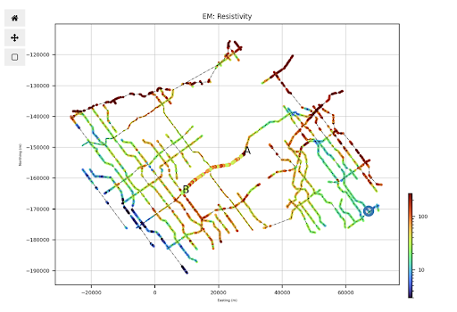
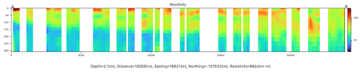
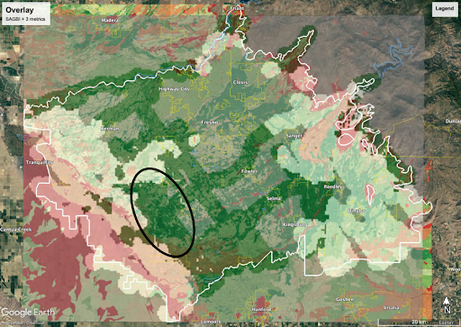

GEOPHYS 190 Project
Project Summary
This project assesses groundwater recharge potential in the Kings Subbasin, Central Valley, California, where 75% of water use relies on groundwater, and overdraft is causing severe land subsidence. Using airborne electromagnetic (AEM) survey data and driller’s logs, a 3D resistivity model was developed to estimate subsurface sediment composition, identifying areas with high permeability for recharge. Three key metrics—fraction of coarse-dominated material, normalized path length, and depth to no-flow—were combined with the Soil Agricultural Groundwater Banking Index (SAGBI) to determine optimal recharge locations. The recommended site, located in the western Kings Subbasin, was chosen based on its high recharge suitability, proximity to overdrafted areas, and feasibility of water conveyance. This study provides a data-driven foundation for sustainable water management, supporting long-term groundwater replenishment in an agriculturally critical region.
Project Gallery

Planar view of resistivity in Kings Subbasin, generated by fastpath

Subsurface resistivity of A-B cut, generated by fastpath

Overlay of three metrics and SAGBI, generated by fastpath
Project Report
Read the full report here:
View Report (PDF)